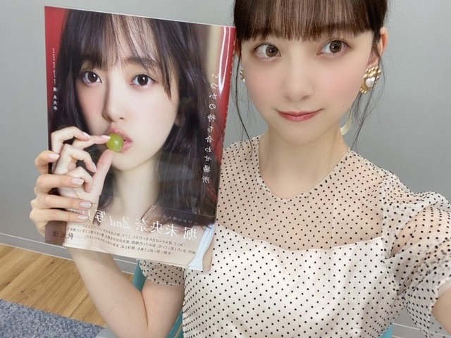
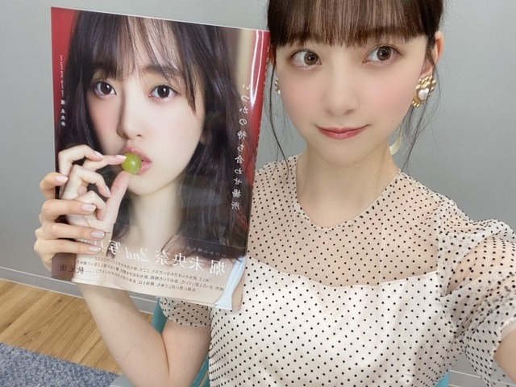

2020/0522Fri@horimiona2nd
さっぱりしたのが食べたくて
昨日は豚しゃぶサラダを作りました
夏ですね
豚肉は茹でてから氷水にくぐらせると
くさみがなくなって食べやすくなります よ
あと大好きな生ハムも食べました
くさみがなくなって食べやすくなります よ
あと大好きな生ハムも食べました
生ハム星人( ຶ- ຶ)♡
いつか生ハムの旅に出たいです
美味しい生ハムを求めて色んな国へ行きたい...
世界旅でニューカレドニアで
食べたのも美味しかったな...
そうそう
いまAbema TVでひなことの世界旅が
無料公開中らしいのでよかったらみてください☺︎
楽しかったなーー!
2人で旅行また行きたい!
2期生でも行きたい!

#いつかの待ち合わせ場所

#いつかの待ち合わせ場所
2nd写真集完成しましたー!✨✨
発売まであと5日です!
もうすぐやん〜ドキドキ
まいちゅんとお母さんにはもう見てもらえました♡
たくさん褒めてもらえて嬉しいです(^-^)
帯コメントも公開されました
帯コメントも公開されました
タイトルの、いつかの待ち合わせ場所に
ぴったりなコメントをいただきました!
ありがとうございます．
オトナな一面も変わらない姿も
この写真集で見てもらえると思います
表紙違いや特典違いたくさんあるので
こちらからcheckしてくださいね〜♡
魔女の宅急便のサントラを
流しながらずっと口ずさんでいます
気持ちが明るくなるし癒されます☺︎
ジェフ
ウルスラの小屋へ がとくに好き
あ、昨日は寝る前に目を瞑って
妄想でディズニーランドへ行ってきました
楽しかったです(^.^)
" 妄想お出かけ "
おすすめです
では
2020/05/22 18:42
コメント(308)
ブログ更新ありがとうございます！
オールナイトニッポンめちゃくちゃ楽しかったです。大学のオンライン授業を真面目に受けようと改心しました笑
ギャル高校のコーナーではホリッピーに似た台詞が聴けたので特に繰り返し聴いてます！
写真集も楽しみにしてます！特典たくさん手に入れたいです！
ではまたコメントします。
オールナイトニッポンめちゃくちゃ楽しかったです。大学のオンライン授業を真面目に受けようと改心しました笑
ギャル高校のコーナーではホリッピーに似た台詞が聴けたので特に繰り返し聴いてます！
写真集も楽しみにしてます！特典たくさん手に入れたいです！
ではまたコメントします。
こんばんは。
妄想お出かけいいですね。
写真可愛いですね。
妄想お出かけいいですね。
写真可愛いですね。
生まれた時からずっと未央奈の2nd写真集まってましたー！
写真集が届くの楽しみにしてます！もうそうお出かけいいね！
こんばんは
生ハムーーイタリアの生ハム
めちゃ美味しいらしい！
従妹がイタリア留学していたときの話です
もう来週だねーー写真集……ワクワクが止まらん
堀ちゃんと妄想お出かけ(( ﾟ∀ﾟ)
行ってきまーーーす
では
こんばんは。ブログ更新ありがとうございます。
私は肉の中では、豚が一番好きです。カレーには絶対豚ですね。冷しゃぶは以前我が家でもやりましたが、これからの季節に丁度良いですよね。
いつかの待ち合わせ場所、完成しましたか！！発売まであと5日？結構ぎりぎりなんじゃ・・・。何にしても楽しみです。
そういえばレコメンの女性アイドル顔だけ総選挙でも未央奈ちゃんランクインしてましたね！！
ではまた。
私は肉の中では、豚が一番好きです。カレーには絶対豚ですね。冷しゃぶは以前我が家でもやりましたが、これからの季節に丁度良いですよね。
いつかの待ち合わせ場所、完成しましたか！！発売まであと5日？結構ぎりぎりなんじゃ・・・。何にしても楽しみです。
そういえばレコメンの女性アイドル顔だけ総選挙でも未央奈ちゃんランクインしてましたね！！
ではまた。
豚しゃぶうまそう
未央奈は生ハム星人
まいやんはマヨラー星人
まいやんはマヨラー星人
未央奈～～～～～～～～～。
僕も生ハム星人になりたいッス。生ハム食べたいな。
緊急事態宣言解除されますように。
未央奈バイバイ
僕も生ハム星人になりたいッス。生ハム食べたいな。
緊急事態宣言解除されますように。
未央奈バイバイ
ブログ更新ありがとうございます！写真集買います！学校で必要なものとかも今になって出てきたので…。生ハムは最近食べてないかな。最近暑いので体調崩さないよう気を付けてね！それでは！
更新ありがとう〜！！
最近はやってる言葉何かある？
最近はやってる言葉何かある？
未央奈ブログ更新ありがとう！！
妄想でディズニーランドに行くのはナイスアイデア！
最近では，インスタを多く更新してくれるので嬉しいです．
好き！
妄想でディズニーランドに行くのはナイスアイデア！
最近では，インスタを多く更新してくれるので嬉しいです．
好き！
ブログ更新ありがとう❗
最近気温が上がったり下がったりしてるから体に気を付けて46時間TV頑張ってね
最近気温が上がったり下がったりしてるから体に気を付けて46時間TV頑張ってね
魔女の宅急便のサントラいいよね！わかります！！
曲は穏やかだけどなんかワクワクする気分になる〜
写真集発売まであと少し！早くみたいなー、待ちきれません
曲は穏やかだけどなんかワクワクする気分になる〜
写真集発売まであと少し！早くみたいなー、待ちきれません
堀ちゃんブログ更新ありがとう！
きーちゃんとの世界旅また観させて頂きました！朝市でのクロックムッシュ、クロックマダム仲の良さが感じられる瞬間、堀ちゃんの涙、何回観ても笑い、感動しました！2期生の旅も観たい！写真集発売まであと5日、楽しみ！
語学の勉強してるって言ってたね。頑張って！ では
きーちゃんとの世界旅また観させて頂きました！朝市でのクロックムッシュ、クロックマダム仲の良さが感じられる瞬間、堀ちゃんの涙、何回観ても笑い、感動しました！2期生の旅も観たい！写真集発売まであと5日、楽しみ！
語学の勉強してるって言ってたね。頑張って！ では
妄想で千と千尋の湯屋に行ってます^_^
未央奈ちゃんこんばんは!2nd写真集の発売とレコメンでの堀太夫お披露目まで5日楽しみ!
更新待ってました~
豚しゃぶサラダ美味しそ~
口に出してみたら「豚しゃぶ"しゃ"らだ」になった笑
魔女の宅急便のサントラいいよね~
次の更新も待ってます( ¨̮ )
豚しゃぶサラダ美味しそ~
口に出してみたら「豚しゃぶ"しゃ"らだ」になった笑
魔女の宅急便のサントラいいよね~
次の更新も待ってます( ¨̮ )
みおな
さっぱりしたもの食べたくなるよねー。
分かるわぁ。
最近天気が不安定だからスッキリしたいし。
さっぱりしたもの食べたくなるよねー。
分かるわぁ。
最近天気が不安定だからスッキリしたいし。
ブログありがと〜！
ずっと迷ってたけどやっぱり写真集買うことにしました！！
Twitter･インスタの毎日の更新見てたり、堀ちゃんの毎日のブログ見てたり(毎日ありがとー！)、こないだのインスタライブ見たりしてたらもう買うしかないなって思っちゃった！！
コロナが収束したら、是非2期生で旅行行ってらっしゃいー！
僕は世界旅見ながら妄想お出かけでニューカレドニア行ってきます！
26
ずっと迷ってたけどやっぱり写真集買うことにしました！！
Twitter･インスタの毎日の更新見てたり、堀ちゃんの毎日のブログ見てたり(毎日ありがとー！)、こないだのインスタライブ見たりしてたらもう買うしかないなって思っちゃった！！
コロナが収束したら、是非2期生で旅行行ってらっしゃいー！
僕は世界旅見ながら妄想お出かけでニューカレドニア行ってきます！
26
今日も変わらず未央奈カワイイ
大好き
大好き
こんばんはお疲れさま☺
豚しゃぶ、冷しゃぶやね☺
ご飯も進むよ～✨
今日仕事帰り、HMVに写真集予約しました☺
めっちゃ楽しみにしてます☺
わくわく、どきどきやね☺
あっ、生ハム美味しいけど塩分多いから食べすぎ注意な！
分かりましたか？(笑)☺
ではではまたね。
体調気をつけてくださいね。
46時間テレビも頑張りや✨
ほなね、堀ちゃん☺
豚しゃぶ、冷しゃぶやね☺
ご飯も進むよ～✨
今日仕事帰り、HMVに写真集予約しました☺
めっちゃ楽しみにしてます☺
わくわく、どきどきやね☺
あっ、生ハム美味しいけど塩分多いから食べすぎ注意な！
分かりましたか？(笑)☺
ではではまたね。
体調気をつけてくださいね。
46時間テレビも頑張りや✨
ほなね、堀ちゃん☺
堀ちゃん、ブログ更新ありがとう！
僕も生ハム大好きなので一緒に生ハムの旅に行きたい！
いよいよ、写真集発売まであと5日ですね！僕も予約しているので早く見たいです！最近は毎日公開されるカットを見て楽しんでます！
乃木旅のshowroomもレコメンも絶対見るよ！
僕は毎日妄想で堀ちゃんの握手会に行ってます！(笑)
これからも体調には気をつけてね！
僕も生ハム大好きなので一緒に生ハムの旅に行きたい！
いよいよ、写真集発売まであと5日ですね！僕も予約しているので早く見たいです！最近は毎日公開されるカットを見て楽しんでます！
乃木旅のshowroomもレコメンも絶対見るよ！
僕は毎日妄想で堀ちゃんの握手会に行ってます！(笑)
これからも体調には気をつけてね！
自分もディズニー大好きですv(*´>ω<｀*)v
何のアトラクションが一番好きですか?(´・ω・`)?
何のアトラクションが一番好きですか?(´・ω・`)?
未央奈さんブログ更新ありがとうございます
得意な料理は何ですか？
私にも料理作ってほしいです！
手巻き寿司をお願いします
得意な料理は何ですか？
私にも料理作ってほしいです！
手巻き寿司をお願いします
未央奈さん(^^)
お疲れ様です(^^)
写真集凄く楽しみです(*^^*)
待ち切れない....
未央奈さん今日も美しいですね..
大好きです(*˘︶˘*).｡.:*♡
お疲れ様です(^^)
写真集凄く楽しみです(*^^*)
待ち切れない....
未央奈さん今日も美しいですね..
大好きです(*˘︶˘*).｡.:*♡
更新ありがとうございます！！
豚しゃぶサラダ美味しいですよね！！
生ハムの旅楽しそう
まいちゅんにもお母さんにも見てもらったんですね！！
早くみたいなぁ〜！！あと5日！！
楽しみ！
豚しゃぶサラダ美味しいですよね！！
生ハムの旅楽しそう
まいちゅんにもお母さんにも見てもらったんですね！！
早くみたいなぁ〜！！あと5日！！
楽しみ！
堀ちゃん、ブログ更新ありがとう
のぎたびは前にも見ましたが、また見直して"妄想お出かけ"してみようと思います
写真集も待ち遠しいですね
またの更新楽しみにしています
のぎたびは前にも見ましたが、また見直して"妄想お出かけ"してみようと思います
写真集も待ち遠しいですね
またの更新楽しみにしています
こんばんは。
豚しゃぶサラダに生ハムいいですなぁー。
写真集もうすぐやね。秋元先生のコメントも素敵でした。
早く見たい!
豚しゃぶサラダに生ハムいいですなぁー。
写真集もうすぐやね。秋元先生のコメントも素敵でした。
早く見たい!
ブログ更新ありがとうございます。写真集で未央奈さんのモグモグをいっぱい見たいです。最後はダジャレで。赤はあかん
未央奈ちゃんブログ更新ありがとう！
さくらちゃんとあやめちゃんとでんちゃんと同じ愛知県出身の愛知の覇王です！
蓮加さんと同じ高校2年生です！
昨日のインスタライブ見ました！
めっちゃ可愛くて、最高でした！
来週のレコメン楽しみにしてます！
久々ののりほりコンビ嬉しいです！
体調を崩さないように気をつけて頑張ってください！
応援してます！
さくらちゃんとあやめちゃんとでんちゃんと同じ愛知県出身の愛知の覇王です！
蓮加さんと同じ高校2年生です！
昨日のインスタライブ見ました！
めっちゃ可愛くて、最高でした！
来週のレコメン楽しみにしてます！
久々ののりほりコンビ嬉しいです！
体調を崩さないように気をつけて頑張ってください！
応援してます！
未央奈の写真集とても楽しみにしています。目標は50周読みます‼️‼️‼️
最近大人っぽい未央奈が可愛くて大好きです
最近大人っぽい未央奈が可愛くて大好きです
ブログ更新ありがとう
豚しゃぶサラダ夏には食べたくなるね
魔女の宅急便のサントラ僕も聴くと明るくなれるから好き
写真集も次のブログも楽しみにしてます
豚しゃぶサラダ夏には食べたくなるね
魔女の宅急便のサントラ僕も聴くと明るくなれるから好き
写真集も次のブログも楽しみにしてます
基本、焼き専門の僕ですが
豚しゃぶサラダは夏場よくお世話に
なってます。胡麻ダレでうどんに
和えて…
あっ、しまった。晩ごはんそれに
すればよかったなぁ。前回も家に帰って
からブログを見て後悔したのに。
明日のメニューにさせて頂きます。
abema tvの無料公開、今日中なんで
今少し焦っています。以前観たとは
言え好きなものは何度観てもいいので。
それと妄想お出かけですか…
ディズニーでいうなら小学生の頃に
行って以来なので妄想でも子供に
なってしまうのではと心配ですね。
でも、自分の好きな事を妄想出来るのは
いいですね〜
僕の妄想の中に未央奈ちゃんを登場
させてもいいですか？
お姫様コーデなんですが…
ではは。
豚しゃぶサラダは夏場よくお世話に
なってます。胡麻ダレでうどんに
和えて…
あっ、しまった。晩ごはんそれに
すればよかったなぁ。前回も家に帰って
からブログを見て後悔したのに。
明日のメニューにさせて頂きます。
abema tvの無料公開、今日中なんで
今少し焦っています。以前観たとは
言え好きなものは何度観てもいいので。
それと妄想お出かけですか…
ディズニーでいうなら小学生の頃に
行って以来なので妄想でも子供に
なってしまうのではと心配ですね。
でも、自分の好きな事を妄想出来るのは
いいですね〜
僕の妄想の中に未央奈ちゃんを登場
させてもいいですか？
お姫様コーデなんですが…
ではは。
かわいいー
ブログ更新 が10
アベマで世界旅見たよー！未央奈の良さがたくさん詰まってて見ててすごく面白かったし真剣に話してるところ見てたら自分の考え方も変わったよ。本当に何度も乃木坂のみんなに勇気づけられてるし、だからこそずっと応援したいと思っています これからも未央奈らしく頑張ってね あと、「コンクリートロードはやめたほうがいいぜ」
アベマで世界旅見たよー！未央奈の良さがたくさん詰まってて見ててすごく面白かったし真剣に話してるところ見てたら自分の考え方も変わったよ。本当に何度も乃木坂のみんなに勇気づけられてるし、だからこそずっと応援したいと思っています これからも未央奈らしく頑張ってね あと、「コンクリートロードはやめたほうがいいぜ」
こんばんは！
以前に「生ハムにハマった」っていうのをブログで見て、前から自分も好きで「一緒だ！」って思ってたら、
生ハムの旅....
実は自分も「生ハムの旅」に行きたくてそのためだけに1年以上スペイン語の勉強をしてて.....笑
好みも目標も一緒で純粋に嬉しいです！
友人からはバカにされていたので笑
イタリアとスペインの生ハムが違ってどちらも美味しいけど、
いろんな生ハム最近食べてきて思ったのは、お手頃価格で美味しいとなると、セブンイレブンのスペイン産の生ハムが1番オススメです！(個人的には笑) 是非食べて見て下さい！
フランスパンにクリームチーズを塗って、上に生ハムとバジルを載せると絶品です！！
以前に「生ハムにハマった」っていうのをブログで見て、前から自分も好きで「一緒だ！」って思ってたら、
生ハムの旅....
実は自分も「生ハムの旅」に行きたくてそのためだけに1年以上スペイン語の勉強をしてて.....笑
好みも目標も一緒で純粋に嬉しいです！
友人からはバカにされていたので笑
イタリアとスペインの生ハムが違ってどちらも美味しいけど、
いろんな生ハム最近食べてきて思ったのは、お手頃価格で美味しいとなると、セブンイレブンのスペイン産の生ハムが1番オススメです！(個人的には笑) 是非食べて見て下さい！
フランスパンにクリームチーズを塗って、上に生ハムとバジルを載せると絶品です！！
未央奈ー
ブログ更新ありがとうー！
明日はアップトゥボーイの発売、そして写真集発売日もいよいよだね！楽しみすぎる！
ブログにモバメに細やかに状況を伝えてくれてありがたやー。
のぎたび も買わなきゃ！ショールーム配信も楽しみー！
楽しみをありがとうー！
ブログ更新ありがとうー！
明日はアップトゥボーイの発売、そして写真集発売日もいよいよだね！楽しみすぎる！
ブログにモバメに細やかに状況を伝えてくれてありがたやー。
のぎたび も買わなきゃ！ショールーム配信も楽しみー！
楽しみをありがとうー！
ブログ更新ありがと！！
あと、妄想お出かけもいいですけど、紙に書いて、旅を計画するのもたのしいですよー！
あと、妄想お出かけもいいですけど、紙に書いて、旅を計画するのもたのしいですよー！
未央奈～❤️ブログ更新ありがとう！
写真集との2shot可愛い❤️！
夏だね～と思ってたら、水曜辺りから寒くない？
気温の急激な変化嫌だよ～
あったかい方が好きかな！
世界旅で食べてた生ハム美味しそうだった！
私も生ハム好きだよ☺️
写真集、本当に楽しみだよ～♪
三冊届きますよ☺️
写真集との2shot可愛い❤️！
夏だね～と思ってたら、水曜辺りから寒くない？
気温の急激な変化嫌だよ～
あったかい方が好きかな！
世界旅で食べてた生ハム美味しそうだった！
私も生ハム好きだよ☺️
写真集、本当に楽しみだよ～♪
三冊届きますよ☺️
堀未央奈❤こんばんは❗昨日、料理したんだね(^o^)v手間をかけて作ったんだね(^o^)v
大変だったね。上手く出来たかな？
未央奈は、ハム好きなんだね(^_^)v
旅に行ければいいね。
早く良くなるといいね(^-^)v
長野県にも来て欲しいな(*^^*)
写真集もう少しで発売だね＼(^o^)／楽しみだな(^o^)v
これからも体調に気を付けて頑張ってね(^_^)v応援しているからね(*^^*)
今日も未央奈の事大好きだし愛してる ♥❤
大変だったね。上手く出来たかな？
未央奈は、ハム好きなんだね(^_^)v
旅に行ければいいね。
早く良くなるといいね(^-^)v
長野県にも来て欲しいな(*^^*)
写真集もう少しで発売だね＼(^o^)／楽しみだな(^o^)v
これからも体調に気を付けて頑張ってね(^_^)v応援しているからね(*^^*)
今日も未央奈の事大好きだし愛してる ♥❤
なかなか海外には行きづらい世の中になってしまったけど、その前に南フランス行けてよかったね。
またいつか旅行できる日が来るのを祈って。
またいつか旅行できる日が来るのを祈って。
ANN聞きました。めっちゃ良かったです
堀ちゃんが、しんどい時に「えらい」と岐阜県では言うと言ってたけど、僕の地元山口県でもえらいって言います
何か共通点があるのかな？
写真集発売まであと少しですね。今週のレコメン！楽しみにしてます。
堀ちゃんが、しんどい時に「えらい」と岐阜県では言うと言ってたけど、僕の地元山口県でもえらいって言います
何か共通点があるのかな？
写真集発売まであと少しですね。今週のレコメン！楽しみにしてます。
未央奈ブログ更新ありがとー！！！！
写真集絶対買うよー！！！
今豚しゃぶ食べてるよー
写真集絶対買うよー！！！
今豚しゃぶ食べてるよー
お姫様、堀未央奈ちゃん
僕は、東海3県に住んでます!
岐阜県の星！東海3県の星！ 堀未央奈ちゃん!
ファイト、堀未央奈!
僕は、東海3県に住んでます!
岐阜県の星！東海3県の星！ 堀未央奈ちゃん!
ファイト、堀未央奈!
今日は寝る前に目を瞑って妄想握手会に出かけます。
写真集発売まであと少し♡
待ち遠しいね。
写真集発売まであと少し♡
待ち遠しいね。
未央奈ちゃん♪ブログの更新ありがとうね♪凄く嬉しいよ♪コメント遅くなってゴメンね(>_<")
豚しゃぶサラダ美味しいよね(о´∀`о)自分も凄く好きだよ(*^^*)夏だね♪夏に食べる豚しゃぶサラダ美味しいね♪豚肉を茹でてから氷水にくぐらせするとくさみが無くなるの初めて知ったよ！明日豚しゃぶサラダ作るからやってみるね♪生ハムも美味しいよね(о´∀`о)
世界旅みてるよ♪凄く楽しくみてるよ♪また、堀北コンビの世界旅みたいよ！２期生での世界旅とかもみてみたいよ♪
写真集の発売日まであと５日だね！もうドキドキだよ！凄く楽しみだよ♪
まいちゅんとお母さんにたくさん褒めてもらえて良かったね♪嬉しいね(*^^*)
帯コメントみたよ！凄く感動して最高だね(。´Д⊂)
早く写真集が欲しくなったよ。
魔女の宅急便のサントラいいよね！自分もこないだ聞いてたよ！癒されるよね♪口ずさむよね！
妄想お出かけ可愛い～♪自分もよく寝る前に目を瞑って妄想で早く行きたい場所を妄想してお出かけしてるよ(#^.^#)良いよね♪大好きな未央奈ちゃんも同じ事してたから自分は凄く嬉しいよ！
確かにおすすめだよね！
また、ブログの更新楽しみにしてるね♪未央奈ちゃん大好きだよ♪では！
堀 未央奈神推し秀喜より！(≧∇≦)
豚しゃぶサラダ美味しいよね(о´∀`о)自分も凄く好きだよ(*^^*)夏だね♪夏に食べる豚しゃぶサラダ美味しいね♪豚肉を茹でてから氷水にくぐらせするとくさみが無くなるの初めて知ったよ！明日豚しゃぶサラダ作るからやってみるね♪生ハムも美味しいよね(о´∀`о)
世界旅みてるよ♪凄く楽しくみてるよ♪また、堀北コンビの世界旅みたいよ！２期生での世界旅とかもみてみたいよ♪
写真集の発売日まであと５日だね！もうドキドキだよ！凄く楽しみだよ♪
まいちゅんとお母さんにたくさん褒めてもらえて良かったね♪嬉しいね(*^^*)
帯コメントみたよ！凄く感動して最高だね(。´Д⊂)
早く写真集が欲しくなったよ。
魔女の宅急便のサントラいいよね！自分もこないだ聞いてたよ！癒されるよね♪口ずさむよね！
妄想お出かけ可愛い～♪自分もよく寝る前に目を瞑って妄想で早く行きたい場所を妄想してお出かけしてるよ(#^.^#)良いよね♪大好きな未央奈ちゃんも同じ事してたから自分は凄く嬉しいよ！
確かにおすすめだよね！
また、ブログの更新楽しみにしてるね♪未央奈ちゃん大好きだよ♪では！
堀 未央奈神推し秀喜より！(≧∇≦)
未央奈～ 写真集発売までもう少しだぁあと５日かぁ。楽しみ
写真集発売までもう少しだぁあと５日かぁ。楽しみ 待ち遠しいなぁ
待ち遠しいなぁ
僕も生ハム大好きやでぇ～ チーズ挟んで食べるのが特に好きやねんけど、未央奈は生ハムに何か挟んだりするのかなぁ？？オススメの生ハムの食べ方教えて下さい
チーズ挟んで食べるのが特に好きやねんけど、未央奈は生ハムに何か挟んだりするのかなぁ？？オススメの生ハムの食べ方教えて下さい
未央奈大好きやでぇ
僕も生ハム大好きやでぇ～
未央奈大好きやでぇ
待ちきれん！


写真集が待ち遠しいです！
全タイプ、買います。 感想を伝えます。
また、レコメンもあるので
のりほりコンビ期待しています！
SRも、楽しみにしています。
堀ちゃんにずっきゅーん！